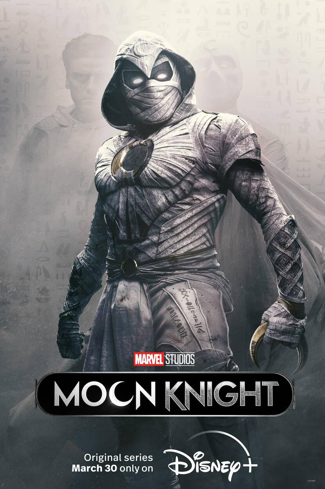
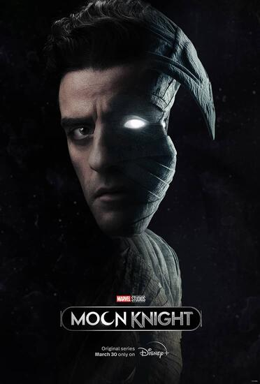

Cavaleiro da Lua |

Primeiro episódio: 30 de março de 2022
Episódio final: 4 de maio de 2022
Número de episódios: 6
Emissora original:Disney+
Número de temporadas: 1
Moon Knight(em português, Cavaleiro da Lua) é uma minissérie estado-unidense criada por Jeremy Slater para o Disney+, baseada no personagem que leva o mesmo nome da Marvel Comics. Sendo esta a sexta série de televisão do Universo Cinematográfico Marvel(MCU). Slater atua como roteirista principal, com Mohamed Diab liderando a equipe de direção.
Steven Grant(Oscar Isaac) descobre que tem transtorno dissociativo de identidade e compartilha um corpo com o mercenário Marc Spector. À medida que os inimigos convergem para eles, eles devem navegar em suas identidades complexas enquanto mergulham em um mistério mortal entre os poderosos deuses do Egito.

Clique Aqui para retornar ao topo